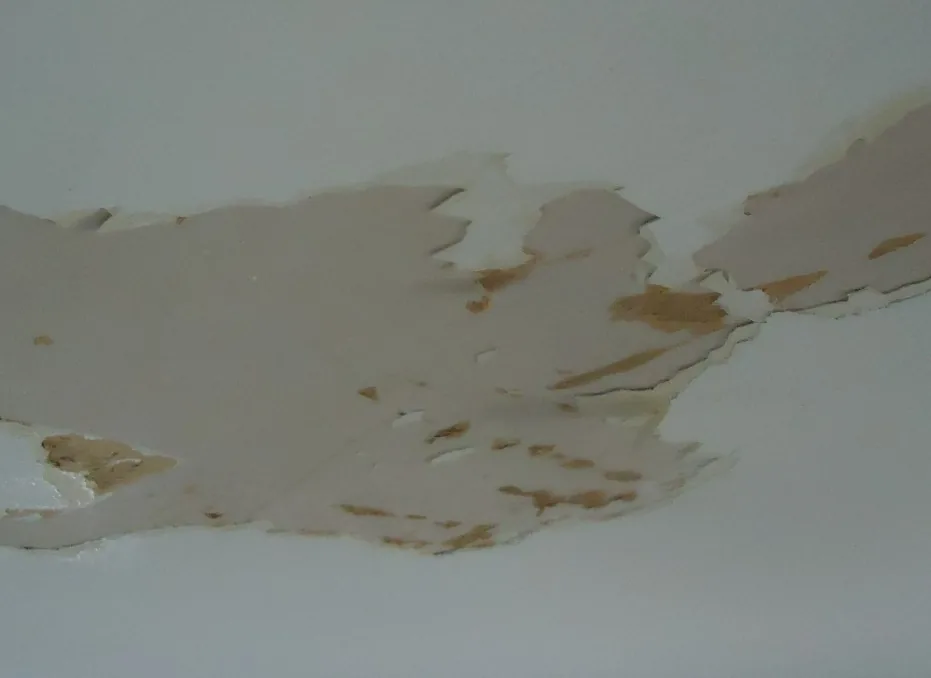

GUÍAS PARA TU CASA 01 / FILTRACIONES
¿Manchas en el techo? 5 señales que conviene revisar.
Aprendé qué observar desde el interior, qué registrar y cuándo consultar. Sin subir al techo.
Conocé las señales
El origen se evalúa en el lugar.
A veces empieza con algo mínimo: un cerco que antes no estaba, una esquina que se ve más oscura o un poco de pintura levantada. Lo notás un día al entrar a la habitación y la primera pregunta suele ser la misma: «¿Estará entrando agua por el techo?». Si además llovió hace poco, es fácil relacionar las dos cosas.
Esa sospecha merece atención, aunque todavía no alcance para explicar qué está pasando. La humedad puede tener distintos orígenes, y dos marcas parecidas no siempre necesitan la misma reparación. Lo más útil al principio es mirar el contexto: dónde apareció, desde cuándo está y qué cambió alrededor de ese momento.
En esta nota repasamos las señales que podés reconocer desde el interior de tu casa. La idea es ayudarte a entender lo que ves y a conversar sobre el problema con más claridad, incluso si nunca antes tuviste una filtración.
LO ESENCIAL, EN UN MINUTO
Detectar el cambio es el primer paso.
- Registrá dónde aparece la marca y si cambia después de llover.
- No tapes ni pintes la zona antes de entender qué ocurre.
- Una foto desde un lugar seguro ayuda a iniciar la consulta.
01 / QUÉ OBSERVAR
Cinco señales para prestar atención.
Pueden aparecer juntas o por separado. Ninguna confirma por sí sola una filtración: también puede haber otras causas de humedad.
No siempre hay una gotera evidente. Una marca puede llamar la atención mucho antes de que aparezca agua cayendo, o hacerse visible en una habitación que usás poco. Por eso, vale la pena contar también esos cambios que parecen menores. Que hoy no gotee no explica, por sí solo, si lo que ves es una marca antigua o un problema que sigue presente.
Manchas o cercos en el cielorraso
Marcas amarillentas, marrones o zonas con un tono distinto al resto de la superficie.
Qué registrar Anotá en qué ambiente están y si el contorno se extiende.
Pintura ampollada o desprendida
Burbujas, pintura que se levanta o pequeños sectores que pierden su terminación.
Qué registrar Sacá una foto desde el piso. No rasques ni tires del material.
Cuando lo primero que cambia es la pintura, es comprensible pensar en lijar y volver a pintar para recuperar el aspecto del ambiente. Pero la terminación cuenta solo una parte de la historia. Si antes había una mancha, si la zona volvió a oscurecerse o si ya se reparó alguna vez, esos antecedentes también importan al evaluar qué conviene hacer.
La foto de abajo muestra un ejemplo de deterioro visible. En tu casa puede verse distinto: una marca pequeña, un borde irregular o una superficie que perdió su aspecto uniforme. No necesitás encontrar una imagen idéntica para hacer una consulta; describir la diferencia con respecto a cómo estaba antes ya aporta información.

Gotas o humedad visible
Goteo, una marca que se ve mojada o agua que aparece durante o después de una lluvia.
Qué registrar Contá cuándo empezó y si el goteo sigue activo.
Olor a humedad que reaparece
Un olor persistente puede acompañar problemas de humedad, aunque no indica por dónde entra el agua.
Qué registrar Indicá en qué ambiente lo notás y desde cuándo.
Cambios después de la lluvia
Una marca que reaparece, crece o se oscurece después de llover es un dato útil para la revisión.
Qué registrar Si ya tenés fotos de distintos días, comparalas sin exponerte.
El momento en que aparece el cambio suele ser parte de la conversación. Por ejemplo, no es lo mismo contar «hay una mancha» que explicar «la vimos por primera vez después de la última lluvia y ahora se nota más cerca de la pared». La segunda descripción no resuelve el diagnóstico, pero permite entender mejor lo que ocurrió.
Tampoco hace falta esperar otra tormenta para comprobarlo. Si ya notaste humedad, podés consultar con la información que tenés. Si no recordás cuándo empezó o no sabés si cambió, decirlo así es suficiente: no necesitás completar todos los detalles para dar el primer paso.
02 / ANTES DE ACTUAR
La mancha muestra dónde aparece el agua. No siempre dónde entra.
El agua puede recorrer una parte de la construcción antes de hacerse visible. Por eso, el lugar de la marca no alcanza para elegir una reparación.
Desde una habitación vemos la cara interior del techo, pero no todo lo que hay por encima. La ubicación de un encuentro, el tipo de cubierta y las reparaciones previas son parte del contexto que puede necesitar una revisión. Una foto tomada desde el piso muestra la consecuencia visible; no siempre permite ver el recorrido que hizo el agua.
Esto explica por qué una solución que funcionó en otra casa puede no ser la indicada para la tuya. Antes de elegir un sellador, una membrana o una nueva pintura, conviene entender qué superficie necesita atención y qué se busca resolver con el trabajo. Esa conversación ayuda a evitar arreglos elegidos solo por la apariencia de la mancha.
Tapar la señal.
Pintar encima o aplicar un producto sin revisar el caso puede ocultar el cambio sin resolver su origen.
Entender qué pasa.
Describí lo que viste y consultá qué revisión corresponde según el estado del lugar y el tipo de techo.
Una consulta puede empezar con una explicación sencilla.
No necesitás conocer el nombre del material ni saber qué tipo de impermeabilización tiene tu casa. Podés contar que la humedad está en el dormitorio, cerca de una pared exterior, y que la notaste hace unos días. Si hubo un arreglo anterior o el problema reaparece en el mismo lugar, también sirve mencionarlo.
Después habrá espacio para preguntar qué información falta, si hace falta revisar el lugar y cómo se definiría el alcance de un posible trabajo. La siguiente lista te ayuda a ordenar ese primer mensaje, sin convertirlo en un informe técnico.
03 / PREPARÁ TU CONSULTA
Cuatro datos que ayudan a empezar.
No hace falta saber la causa. Contanos lo que podés observar.
- 01Dónde
Tu zona y el ambiente donde aparece la marca.
- 02Desde cuándo
Cuándo lo notaste, o si ya había ocurrido antes.
- 03Qué cambió
Si crece, gotea o se modifica después de llover.
- 04Una foto, si es seguro
Tomada desde el interior, sin subir ni acercarte a zonas inestables.
Una vez enviada la consulta, lo importante es poder hablar del mismo problema: qué se observa, qué falta comprobar y cuál sería el próximo paso. Si algo de la explicación o del trabajo propuesto no te queda claro, preguntalo. Entender qué se va a revisar también forma parte de cuidar tu casa.
04 / DUDAS FRECUENTES
Antes de escribirnos.
¿Toda mancha en el techo es una filtración?
No. Distintos problemas de humedad pueden producir marcas parecidas. La señal orienta qué revisar, pero no confirma el origen.
¿Puedo pintar encima para solucionarlo?
Pintar cambia la terminación, pero no resuelve necesariamente la causa de la humedad. Conviene revisar el origen antes de elegir la reparación y la pintura.
¿Una foto alcanza para dar un diagnóstico?
Ayuda a explicar lo que viste y a ordenar una primera conversación. La evaluación y el alcance de un trabajo dependen del caso y pueden requerir revisar el lugar.
¿Qué hago si está goteando ahora?
Indicá que el goteo está activo al consultar. Mantenete lejos de elementos eléctricos y de zonas con desprendimientos. Si hay peligro inmediato, alejate del área y pedí asistencia adecuada.
DE LA DUDA AL PRÓXIMO PASO
¿Te apareció una mancha después de la lluvia?
Contanos dónde está y desde cuándo la notás. Si tenés una foto tomada desde un lugar seguro, también podés enviarla.
Créditos de las imágenes
Fotografías ilustrativas de Wikimedia Commons; no representan trabajos de Techos Sanabria. Portada: Tomwsulcer, CC0. Detalle: Ed!, CC BY-SA 3.0. Archivos convertidos a WebP y AVIF sin modificar sus dimensiones; el encuadre de presentación se adapta a la pantalla.